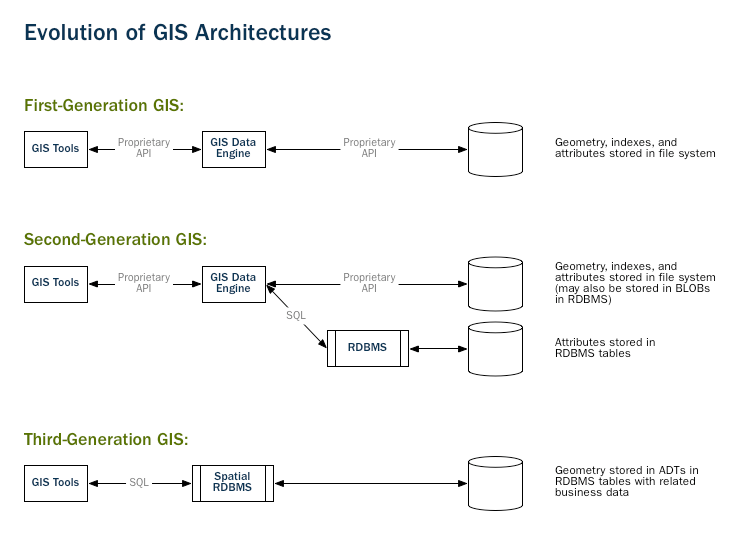
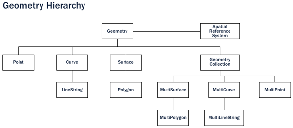

PostGIS -- это пространственная СУБД. Oracle Spatial и Microsoft SQL Server (2008 и более новые) тоже являются пространственными СУБД.
Пространственная СУБД хранит и обрабатывает пространственные объекты наряду с другими (обычными) объектами в БД.
История развития геоинформационных систем (GIS):
В прошлом GIS первого поколения хранили все данные в виде обычных файлов в файловой системе, как правило, в проприетарном формате. Такие системы были несовместимы друг с другом.
GIS второго поколения стали хранить некоторые данные в реляционных БД (обычно атрибуты или непространственные данные), но всё еще были недостаточно гибкими для прямой интеграции с другими системами.
Настоящие (истинные) GIS появились тогда, когда люди стали рассматривать простраственные объекты как объекты БД первого класса.
Пространственная БД полностью интегрирует и не отделяет пространственные данные от обычных объектов реляционных СУБД. Фокус сместился с геопространственных данных к СУБД.

Пространственные СУБД применяются не только в мире географии -- их используют при описании анатомии человеческого тела, устройства электронных микросхем (например, процессоров), молекулярных структур, электро-магнитных полей и многого другого.
Пространственные типы данных
Обычные СУБД работают со строками, числами и датами. Пространственные СУБД кроме этого работают ещё и с пространственными типами данных для представления географических объектов. Эти специальные типы данных абстрагируют и инкапсулируют пространственные структуры, такие как граница (boundary) и измерение (dimension). Во многих отношениях, пространственные данные можно понимать просто как фигуры.

Пространственные типы данных организованы в иерархию, где каждый подтип наследует структуру (атрибуты) и поведение (методы или функции) своего родителя.
Пространственные индексы
Обычные СУБД предоставляют "способы доступа", известные как индексы, для быстрого доступа к произвольным подмножествам данных. Индексирование стандартных типов (числа, строки, даты) обычно производится при помощи B-деревьев (B-tree). Это возможно, потому что для числа, строки и даты легко упорядочить -- например, любое число больше, меньше или равно любому другому числу.
Но пространственные данные не поддаются такому простому упорядочиванию. Многоугольники могут пересекаться, могут находиться один внутри другого, могут просто быть рядом в двухмерном (или трехмерном, четырехмерном...) пространстве, поэтому B-деревья для этой задачи слабо применимы. Настоящие пространственные СУБД используют "пространственные индексы", которые отвечают на вопрос: "какие объекты находятся в указанных границах?".
"Указанные границы" -- это минимальный прямоугольник со сторонами, параллельными координатным осям, способный вместить указанную фигуру.
Эти границы используются, потому что ответ на вопрос "находится ли A внутри B?" для многогранников требует значительных вычислительных ресурсов, но очень прост, если работать с прямоугольниками. Любая фигура может быть представлена в виде описывающего прямоугольника соответствующей размерности.
Индексы полезны только если они работают быстро. Поэтому вместо предоставления точных результатов (как в случае B-деревьев), пространственные индексы дают приблизительные. Вместо ответа на вопрос: "какие линии находятся внутри этого многоугольника?" пространственный индекс ответит на вопрос: "какие линии имеют описывающие прямоугольники, которые находятся внутри описывающего прямоугольника этого многоугольника?".
Существует множество реализаций пространственных индексов. Наиболее растпространенными являются R-деревья (R-trees), используемые в PostGIS, но также существуют Quadtree, grid-based индексы, используемые в других пространственных СУБД.
Пространственные функции
Для манипуляции данными в рамках запроса обычные СУБД предоставляют функции, такие как склеивание строк, вычисление хешей от строк, арифметические операции над числами и извлечение информации из дат. Пространственные СУБД предоставляют полный набор функций для анализа геометрических компонентов, определения отношений между фигурами и выполнения других геометрических операций. Эти пространственные функции служат "строительными блоками" для любого пространственного объекта.
Большинство пространственных функций можно поместить в одну из следующих пяти основных групп:
1. Конвертация: функции, которые конвертируют объекты из геометрических во внешние форматы данных и обратно;
2. Управление: функции, которые управляют пространственными таблицами (структура и проч.), а также помогают администрировать PostGIS;
3. Извлечение информации: функции, которые позволяют получать свойства и размеры геометрических объектов;
4. Сравнение: функции, которые позволяют сравнить две геометрических фигуры с учётом их положения в пространстве;
5. Генерация: функции, которые создают новые геометрические фигуры на основе других.
Полный список пространственных функций очень обширен, но множество основных функций определено в документе OGC SFSQL (стандарт для геопространственных СУБД) и реализованы наряду с другими полезными функциями в PostGIS.
Что такое PostGIS?
PostGIS превращает СУБД PostgreSQL в пространственную СУБД, добавляя в неё пространственные типы данных, индексы и функции. Благодаря тому, что PostGIS основан на PostgreSQL, он автоматически такие наследует важные для использования "в бою" качества, как надежность, открытость и следование стандартам.
PostgreSQL изначально была спроектирована с учетом поддержки расширений -- т.е. возможностью добавлять новые типы данных, функции и методы доступа во время выполнения (ar run-time). Именно благодаря этому PostGIS так глубоко интегрируется в PostgreSQL, хоть и поддерживается независимой командой разработчиков.